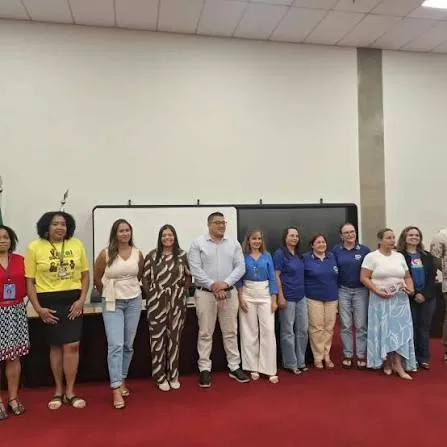

Missão
Promover ações de solidariedade e apoio às famílias que precisam.
Mobilizamos a comunidade para apoiar famílias em situação de vulnerabilidade em Paulínia. Cada contribuição ajuda a fazer a diferença.

O Varal Solidário Paulínia é uma iniciativa comunitária fundada em 2021 para apoiar famílias em situação de vulnerabilidade social. Por meio da mobilização de doações e da solidariedade, a organização contribui com itens essenciais para o dia a dia.
A entidade realiza ações de arrecadação e distribuição de cestas básicas, roupas, calçados e móveis. Os detalhes da trajetória, dos critérios de atendimento e das ações atuais podem ser complementados com informações fornecidas diretamente pela equipe da organização.
Promover ações de solidariedade e apoio às famílias que precisam.
Uma comunidade mais solidária, acolhedora e participativa.
Empatia, respeito, dignidade, transparência e colaboração.
Conheça as frentes em andamento e os resultados já alcançados. Confirme com a equipe os nomes e formatos atuais de cada campanha.
Recebimento e organização de roupas em bom estado para que possam chegar a pessoas e famílias da comunidade.
Quero doar →Mobilização para arrecadar itens como cestas básicas, calçados e outros artigos conforme as necessidades identificadas.
Quero doar →Conexão entre doadores, voluntários, empresas parceiras e famílias que precisam de apoio.
Quero participar →Marco divulgado em reportagem de 2025: desde a fundação, as campanhas do Varal já chegaram a mais de mil famílias de Paulínia.
Ver impacto →Uma reportagem publicada em 2025 informou que a iniciativa já havia atendido mais de mil famílias. Os demais indicadores devem ser confirmados pela organização.
Em 2025, uma reportagem informou que a iniciativa já havia atendido mais de mil famílias. Confirme o número atualizado com a equipe antes da publicação.
Registros de eventos, campanhas e ações do Varal Solidário. Clique em uma foto para ampliar.
Contribua com o Varal Solidário ou participe de outras formas.
Envie uma mensagem pelo formulário ou escolha um dos nossos canais para tirar dúvidas, conhecer as campanhas ou combinar uma forma de contribuir.